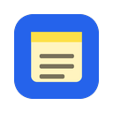

Termos de Uso do NotaTab
Uso da extensão
O NotaTab é uma extensão gratuita para o Google Chrome que exibe um mural de notas na página de nova guia. Ao instalá-la, você concorda com estes termos e com a Política de Privacidade.
Seus dados
As notas são suas. Elas ficam no seu navegador e, se você ativar, na sincronização do Chrome e no seu próprio Google Drive. O desenvolvedor não tem acesso ao conteúdo das suas notas.
Backup e responsabilidade
O NotaTab oferece backup automático no Google Drive e exportação em arquivo para ajudar a proteger suas notas. Ainda assim, a extensão é fornecida "como está", sem garantias. Recomendamos manter o backup ativado. O desenvolvedor não se responsabiliza por perda de dados causada por desinstalação, falhas do navegador, da sincronização ou de serviços de terceiros.
Serviços do Google
A sincronização e o backup usam serviços do Google (sincronização do Chrome e Google Drive), sujeitos aos Termos de Serviço do Google.
Alterações e contato
Estes termos podem ser atualizados; a versão vigente fica sempre nesta página. Dúvidas: moacir.flamel@gmail.com.